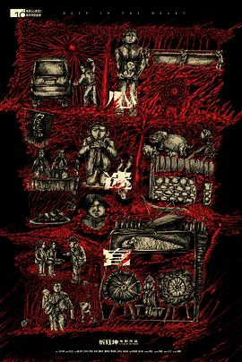

心迷宫
又名：殡棺 / The Coffin in the Mountain / Deep in the Heart
真是够纠结的啊，颇有七宗罪的感觉，但是还是差那么点 _(:3」∠)_ 但是还是不会太腻，因为总是有未解的地方在吸引着你看下去，不过作为电影还是有点索然无味
作品信息
| 导演 | 忻钰坤 |
| 编剧 | 忻钰坤 / 冯元良 / 鲁妮凡 |
| 主演 | 霍卫民 / 王笑天 / 罗芸 / 杨瑜珍 / 孙黎 / 邵胜杰 / 曹西安 / 贾致钢 / 朱自清 / 王梓尘 / 赵梓彤 / 贾世忠 / 袁满 / 陈梅生 / 张景素 / 平坦 / 金子 / 张建军 |
| 类型 | 剧情 / 悬疑 / 犯罪 |
| 制片国家/地区 | 中国大陆 |
| 语言 | 汉语普通话 |
| 上映日期 | 2015-10-16(中国大陆) / 2014-07-21(FIRST青年影展) / 2014-08-28(威尼斯电影节) |
| 片长 | 110分钟(中国大陆) / 119分钟(威尼斯电影节) |
| IMDb | tt4078856 |
说过什么
2016-01-23
标记 · 看过
真是够纠结的啊，颇有七宗罪的感觉，但是还是差那么点 _(:3」∠)_ 但是还是不会太腻，因为总是有未解的地方在吸引着你看下去，不过作为电影还是有点索然无味
2015-11-14 16:25:59
广播 · 想看
评分这么高，等放流瞅瞅
最后一次看到是 2026-08-01T11:06:35+10:00 · 豆瓣原页